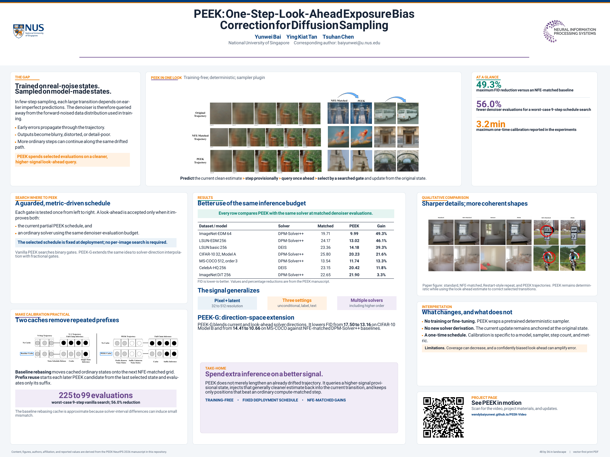

One-step look-ahead
An eligible step first advances provisionally, then evaluates the denoiser at the resulting higher-signal state.
Diffusion sampling, one step ahead
PEEK is a training-free plugin for deterministic diffusion samplers. At selected steps, it queries a provisional look-ahead state and uses the resulting prediction to correct the current sampling trajectory.
Method overview
Diffusion denoisers are trained on forward-corrupted data, yet sampling repeatedly feeds them states produced by earlier imperfect predictions. PEEK targets this exposure bias without retraining the model or replacing the underlying sampler.
An eligible step first advances provisionally, then evaluates the denoiser at the resulting higher-signal state.
A greedy calibration procedure selects interpolation positions by comparing candidates with ordinary sampling at matched denoiser-evaluation cost.
The selected schedule is fixed for deployment. PEEK wraps pretrained deterministic samplers without fine-tuning the denoiser.
The manuscript studies pixel-space and latent-space models under unconditional, label-guided, and text-guided generation, with comparisons matched by denoiser evaluations.
reported FID reduction over an NFE-matched baseline in the manuscript.
Project video
The original project video is retained here with native playback controls. It presents the motivation, look-ahead mechanism, and empirical comparisons.
The video starts muted to respect browser autoplay policies. Use the player controls to enable audio.
Resources
The public repository provides the framework-neutral correction loop, schedule-search utilities, caches, examples, and lightweight tests. The poster summarizes the method and reported results.
Implementation
Browse the minimal public implementation, installation instructions, runnable toy example, and optional Diffusers adapter.
Browse code
Research summary
View the print-resolution poster for a compact summary of the motivation, method, calibration procedure, results, and limitations.
Open poster